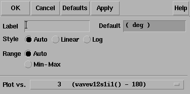

3
PLL library
The models in the phase lock loop (PLL) library support top-down design of PLLs. Figure 3-1 shows the three steps of the design flow. This appendix describes the first step in detail; all three steps are described briefly.
Figure 3-1 PLL Top-Down Design Flow
-
The first step in Figure 3-1 is to develop an executable specification. The executable specification is an arrangement of fast behavioral models that permits fast architectural studies to separate specification and implementation issues. The executable specification contains baseband models [1,2,3,4,5,6,7,8,9]. (Reference [1] uses the terms “baseband” and “bandpass” explicitly.)
These baseband models suppress clocks and RF/IF carriers. Some literature refers to PLL baseband models as “relative phase” or “phase-domain” models [2]. This appendix uses the latter term. Phase-domain PLL models are exceptionally fast, capture the important non-linear mechanisms, and can be linearized directly for AC analysis. - The second step in Figure 3-1 is to translate the executable specification into a system testbench. The system testbench, unlike the executable specification, is composed of passband models [1]. This Appendix refers to passband models as voltage-domain models because they simulate voltages you can observe in a laboratory.
- Comparing voltage- and phase-domain voltage-controlled oscillator (VCO) models highlights the difference between the two models. The output of a voltage-domain VCO model is a clock voltage, a periodic signal. The output of a phase-domain VCO model is a voltage numerically equal to phase. If you unwrap the VCO phase, in steady state, it ramps up indefinitely. Unwrapped phase is not periodic. Voltage-domain models describe non-linear effects related to the shapes of the actual RF waveforms. Such waveform effects include spurs and harmonic locking. Harmonic locking occurs when the PLL locks on to a harmonic of the reference.
- Phase-domain models do not simulate waveform effects. The system testbench is more accurate than the executable specification, but it is still behavioral. Equipped only with behavioral voltage-domain models, the testbench does not simulate device-level effects associated with specific implementations. Examples of such implementation effects are interstage loading, improper bias, and device parasitics.
- The last step in Figure 3-1 is to gradually replace the behavioral models in the system testbench with device-level models, one or two blocks at a time. Device-level models check for the previously mentioned implementation problems. The entire PLL is simulated at the device-level only as a final verification step because such simulations are very lengthy.
Models in the PLL library
The PLL library includes the following phase-domain models:
- Analog multiplier phase detector
-
XOR phase detector with bipolar output
The XOR phase detector is not explicitly discussed here because it is very similar to the analog multiplier phase detector. The only difference is that the duty cycle-phase error transfer curve is triangular instead of sinusoidal. - Three-state digital phase frequency detector (PFD)
- Charge pump (current source version)
- VCO tuning curve (analytic and tabular versions)
- Frequency divider
- Lock indicator
Introduction to the PLL Library Documentation
The primary system-level specifications captured by this first set of phase-domain models are acquisition time, lock and capture ranges [12], and phase margin. The PFD model also simulates backlash[8]. Backlash is sometimes called “deadband” effect. It is a limit cycle caused by the phase-frequency detector’s inability to linearly reduce its output pulse width to zero as phase error goes to zero.
The remainder of this appendix is divided into two main sections.
The first section introduces phase-domain modeling, describes a feature included to prevent DC convergence problems, and then shows you some examples of using phase-domain models.
The second section explains how to assemble a more complex PLL and discusses an example. The examples are introductory and are not a comprehensive discussion of all applications of phase-domain models.
Phase-Domain Model of a Simple PLL
Description
This PLL example, which is built around the simplest phase detector in the library, introduces the fundamentals of phase-domain modeling. Figure 3-2 shows a voltage-domain model of the example and also some selected waveforms. The phase detector in this case is an ideal analog multiplier.
Figure 3-2 Voltage Domain Model
Figure 3-3 shows the equivalent phase-domain model. The phase-domain model is based on the following trigonometric identity:
sin(θ1)*cos(θ2) = (1/2)*[sin(θ1+θ2)+sin(θ1−θ2)]
which, after filtering is approximately
(1/2)*sin(θ1−θ2)
The phase and frequency waveforms from the phase-domain model match their voltage-domain counterparts, but the simulation runs faster because the oscillatory waveform is not explicitly simulated.
Combining the integrators, as shown in Figure 3-4, eliminates the integrator outside the feedback loop which might cause a problem if you forget to specify an initial condition. Combining the integrators is also necessary if you build phase-domain models of phase-frequency detectors because, in this case, the non-linearity has memory (hysteresis).
Figure 3-4 A More Practical Phase Domain Model
The models in both Figure
The sinusoidal function in Figure 3-5 is the phase detector transfer curve. The phase detector is the only non-linear element in this PLL model. For reasons associated with phase-frequency detectors, the phase detector output is called the duty cycle.
Figure 3-5 Phase Detector Transfer Curves
If the required duty cycle lies outside [-1,1], the loop is not locked in steady state. If the required duty cycle lies within [-1,1], there are an infinite number of possible phase errors. In either case, a Spectre® circuit simulator RF analysis (Spectre RF) simulation might not converge. The ability of Verilog-A© to perform different tasks for different analyses provides an elegant solution to the DC convergence problems and a quick way to map out lock range. Lock range is the range of input frequencies for which the PLL can maintain lock. (Some literature refers to lock range as hold-in range [8].)
The phase detector model uses the monotonic transfer curve for DC analysis and the true periodic transfer curve for transient analysis. The two transfer curves coincide when the phase error lies in the interval [−π/2, π/2]. If the required duty cycle lies within [-1,1], the monotonic transfer curve forces the steady-state phase error to the interval [-π/2, π/2], where the two curves coincide. The equilibrium point is open-loop-stable, meaning that at DC the loop gain is a positive real number. This is true because the slope of the transfer curve is positive over [-π/2, π/2]. The Nyquist stability criterion is therefore easier to apply. The DC analysis is general enough because only the phase error modulo 2π is of interest, and you usually care only about the open-loop-stable operating points. When the loop is not locked, the DC analysis computes a duty cycle with a magnitude greater than one. A duty cycle greater than one is clearly incorrect, but it is much easier to interpret than a convergence error. DC duty cycle is a lock indicator which can be used in a parametric DC analysis to sweep out lock range.
Example 1: Dynamic Test for Capture Range and Lock Range
The circuit used to dynamically test for capture range and lock is range is example_analog_PD in the pllLib library. Capture range is the range of input frequencies that the PLL can acquire from an unlocked state. Because acquisition of frequencies near the edge of the capture range involves a pull-in mechanism [1-12], measuring the capture range requires a transient analysis. You can measure capture and lock ranges by slowly sweeping the input frequency and observing the frequency at which the duty cycle begins and ends a long ramp [12]. You must skip the DC analysis to observe the capture limits. Figure 3-6 plots the VCO control voltage against the input frequency voltage. The input frequency first ramps up and then down. A buffered auxiliary circuit responds to the duty cycle and adds 2.5 volts when the input frequency changes direction. This technique makes the plot easier to read because the forward and reverse sweeps occupy different parts of the vertical scale. In this example, lock range is from 1.36Khz to 3.4Khz, and the capture range is from 1.8Khz to 3Khz.
Figure 3-6 Lock Range and Capture Range
Figure 3-7 compares VCO control voltages in the forward sweep when computed with voltage- or phase-domain models. The models produce similar results. In this example (2.5Khz center frequency), the phase-domain model is only about 20 times faster than the voltage-domain model.
Figure 3-7 VCO Control Voltages Computed with Voltage- and Phase-Domain Models
Example 2: Loop Gain Measurement
Spectre RF cannot perform a useful AC analysis on a voltage-domain model because by design, a voltage-domain PLL model has no DC operating point. However, because Spectre RF linearizes phase-domain models about phase error, and phase error is a meaningful DC quantity, subsequent AC analyses are valid.
This example describes how to compute loop gain with a phase-domain model. Figure 3-8 shows an analog design environment version of the model shown in Figure 3-4. The circuit used to measure loop gain is example_loop_gain in the pllLib library.
Figure 3-8 Set Up for Loop Gain Measurement
The phase-domain model in Figure 3-8, example_loop_gain, includes a voltage source inserted after the VCO. The DC voltage is zero volts, and the AC magnitude is 1 volt. The new voltage source inserts a test signal without changing the DC operating point. You must insert this source at a point where the impedance looking back is much smaller than the impedance looking forward. The accuracy of the resulting loop gain computation depends on how well this condition is met.
Use the following procedure to compute the loop gain.
Open the example_loop_gain Schematic
-
In the CIW, choose File – Open.
The Open File form appears. -
In the Open File form, choose my_pllLib in the Library Name cyclic field.
This is an editable copy of the pllLib library. You can create an editable copy of the pllLib in the same way as is described in the Spectre Circuit Simulator and Accelerated Parallel Simulator RF Analysis in ADE Explorer Workshop. -
Choose example_loop_gain in the Cell Names list box.
The completed Open File form appears like the one below.
-
Click OK.
The Schematic window for the example_loop_gain circuit appears.
-
In the Schematic window, choose Tools– Analog Environment.
The ADE window opens. This window is also called the Cadence® Analog Circuit Design Environment.

Setting Up the Design Variables
-
In the ADE window, choose Variables – Copy From Cellview to copy variables from the schematic to the ADE window. Mhz_in displays in the Design Variables area of the ADE window.
- In the ADE window, choose Variables – Edit, to provide a value for the Mhz_in variable.
-
The Editing Design Variables form appears.
-
In the Value (Expr) field, type
2.5mfor the value ofMhz_inand click Change. - In the Editing Design Variables form, click OK.
-
The new value for Mhz_in displays in the Design Variables area of the ADE window.
Setting Up the AC and DC Simulations
Set up both AC and DC analyses. The zero-voltage vdc source must be the only source with a non-zero AC magnitude.
When you set up the DC analysis, save the DC data so you can annotate the schematic with DC node voltages.
- In the ADE window, choose Analysis - Disable to disable any analyses you ran previously. (Check the ADE window to verify whether or not any analysis is enabled.)
- In the ADE window, choose Analysis - Choose to display the Choosing Analyses form.
- Click dc to set up the DC analysis.
- In the DC Analysis area
- Click ac to set up the AC analysis.
- In the AC Analysis area
- Click OK in the Choosing Analyses form.
-
Both analyses are displayed in the ADE window.
Run the Analyses
-
To run the analyses, choose Simulation – Netlist and Run in the ADE window.
The output log file appears and displays information about the simulation as it runs.
Look in the CIW for a message that says the simulation completed successfully.
Displaying the DC Voltages on the Schematic Nodes
-
In the ADE window, choose Results – Annotate – DC Node Voltages to display the node voltages on the schematic. The DC operating point for the net called duty_cycle must remain between
-1volt and1volt.
If the operating point falls outside the interval [-1, 1] volt, the loop is not locked and the AC analysis is invalid.
AC Response as Gain and Phase
- In the ADE window, choose Results – Direct Plot – AC Gain & Phase and follow the prompts at the bottom of the Schematic window.
- Select first point—Select the net labeled returned in the schematic.
- Select second point—Select the net labeled injected in the schematic.
- The waveform window displays two curves.
- The top curve plots phase.
-
The bottom curve plots gain.
-
In the waveform window, choose Tools – Calculator to open the calculator.
- In the calculator, click the wave button (on the left).
-
Then, in the waveform window, select the phase curve (on the top).
- In the calculator, to perform the calculations algebraically, choose Options – Set Algebraic.
- Subtract 180 from the phase waveform—In the calculator, click the subtraction symbol (-) followed by the numbers 180.
-
The calculator buffer should look similar to the following
-
Click the plot button to plot the calculated waveform.
-
To remove the original phase curve from the waveform window, in the waveform window
- Choose Curves – Edit to display the Curves form.
- In the Choose Curves list box, highlight the original phase curve.
- Click Off.
-
The Curves form looks similar to the following.
- To create the Bode plot
- Click OK in the Edit Curves form.
-
In the waveform window, choose Axes – To Strip to change the display as follows.
This produces a Bode plot (magnitude and phase) of the loop gain in the waveform window Shown in Figure 3-9.
Figure 3-9 Bode Plots, Magnitude and Phase of Loop Gain
-
To generate a Nichols chart (dB versus degrees) from which you can pick off phase and gain margins,
- In the waveform window, choose Axes – X Axes
- In the Plot vs. cyclic field select the phase curve you created that is 180 degrees out of phase.
-
Click OK.

Figure 3-10 Nichols Chart of Loop Gain
To compute phase margin directly do the following:
- In the calculator, click vf.
- In the Schematic window, click first on the return node and then on the injected node.
- In the calculator, click the divide button.
- In the calculator Special Functions menu, choose phase margin followed by print.
- Add 180 degrees to the expression in the calculator then choose print from the Special Functions menu.
- The Results Display Window displays the phase margin.
Example 3: PM Input
The circuit used to test for PM input is example_PM in the pllLib library. The PM (phase modulation) input pin is useful if the PLL is used as a modulator or demodulator, but it also provides a convenient place to perturb the PLL to assess large signal stability. Figure 3-11 shows a test circuit for such a stability check.
Figure 3-11 Stability Check Using the PM Input
This PLL is very simple but yet different from the previous example. It was modified to produce more interesting results. The lower circuitry requires explanation. The difference amplifier computes frequency error and converts it from Mhz to rad/sec. The integrator computes VCO and reference contributions to phase error. The voltage-controlled-voltage-source at the end adds the input phase stimulus to compute total phase error. The difference amplifier and integrator are from the ahdLib.
The input phase is a delayed step. The delay makes the initial phase error easy to read. A parametric analysis on the phase error’s step response with respect to the size of the input phase step reveals some interesting behavior. Figure 3-12 shows the family of phase error step responses produced by the parametric analysis. The external integrator is intentionally not a circular integrator like the one inside the phase detector model. For large and small steps in input phase, the PLL settles into equilibrium, possibly a new one. However, a narrow intermediate range of steps puts the PLL into an unstable mode. The references examine this behavior in mathematical detail [1,4,6,10]. This example shows one way to assess large-signal stability and to demonstrate that the phase-domain models capture the major non-linear mechanisms.
Figure 3-12 Phase Error Response to Step PM Input
Modeling a PFD-Based PLL
Figure 3-13 shows a block diagram of a typical PLL with a phase-frequency detector. This section describes how to specify each component in Figure 3-13 and briefly explains what each model does.
VCO
The VCO is modeled by its tuning curve. The tuning curve characterizes the relationship between the input voltage and the output frequency. The input to the VCO model is the loop filter output voltage, also called the VCO control voltage. The VCO output is a voltage representing the VCO’s instantaneous frequency in Mhz. Therefore, when the VCO operates at 2 Mhz, the model output is 2 Volts.
The VCO tuning curve is generally nonlinear and can be specified in one of two ways:
Polynomial tuning curve: The input voltage is internally clamped to the nearest end point if it moves outside the interval [min-vco-input-voltage, max-vco-input-voltage]. Although the input voltage may fall outside the interval, the output behaves as though the input voltage value is at the end points. Within the interval, the output is a fourth order polynomial in the quantity, Vinput minus the free running voltage. When the input voltage equals the free running voltage, the output frequency equals the free running frequency. The scale factor scales the entire polynomial and has a default value of 1. The scale factor is useful in converting data in Khz/volt, for example, to the required Mhz/volt. The parameters are the coefficients of the polynomial.
Table look-up tuning curve: The two parameters are the scale factor and the path to the look-up data. The look-up model linearly interpolates between data points and linearly extrapolates outside the data interval. The data format is two columns of data delimited by spaces. There is no header, and there are no extra lines at the end. The first column is input voltage. The second column is output frequency. The path to the data can be absolute or relative to the netlist. The netlist is usually stored at
<home>/simulation/ckt_name/spectre/schematic/netlist/input.scs
but you can choose a different location.
<home>/data/table
and the netlist is as shown above, the relative path is
../../../../../data/table.
Frequency Divider
The frequency divider is essentially a simple gain element. It takes an input voltage that represents frequency in Mhz, and then scales it by the divide ratio to generate an output voltage that represents the divided frequency. The divide ratio is numerically equal to the voltage on the control pin. If the divide ratio drops below 0.001, the model assigns it to 0.001 and issues a warning. This assignment prevents division by zero during simulation.
Charge Pump
The charge pump transforms the duty cycle into the expected average current sourced or sunk by the charge pump. You define the maximum source and sink currents, and they can be different from each other. If the charge pump output voltage exceeds the rails you define, the output voltage is clamped to the rail through a 0.001 Ohm resistance. The other parameters are the leakage resistance and open circuit voltage. These last two parameters specify the Thevenin equivalent circuit of a leakage path. The leakage path can source or sink current depending on the open circuit voltage.
Loop Filter
The loop filter is entered component-for-component.
State-Space Averaged PFD (Phase-Domain Phase-Frequency Detector Model)
The phase-frequency detector (PFD) model approximates average behavior of a digital, three-state, phase frequency detector. This is the most complicated model in the PLL library. The term state-space averaged is borrowed from the power electronics field [14]. The charge pump currents for the three PFD states are averaged together with a duty cycle much like voltages are averaged together with a duty cycle in a switch-mode power supply model. The PFD inputs are voltages representing the reference and divider output frequencies in Mhz. The output is a voltage that when multiplied by the maximum charge pump current, numerically equals the average charge-pump output current. The PFD output is a duty cycle. When the frequency error is large, the duty cycle is a smooth waveform directly related to the normalized frequency error [1,4]. When the frequency error is small, an integrator inside the PFD model converts frequency error to phase error, and the duty cycle is proportional to the phase error. The duty cycle starts jumping to zero (or resets) as it changes from frequency-mode to phase-mode.
As phase error enters a deadband determined by the minimum-on-time parameter and reference frequency, the model computes a duty cycle pulse with magnitude one and duration equal to the minimum-pulse-width. After the pulse expires, the duty cycle drops to zero until the phase error exits the deadband. As the phase error exits the deadband, the duty cycle increases to a non-zero value. The deadband and fixed-width unity pulse simulate what some texts call backlash [8].
The PFD model has two parameters. The first is a numerical option that controls the trade-off between execution speed and accuracy. The speed_vs_accuracy parameter controls the number of times the internal integrator is reset during the transition from frequency-mode to phase-mode. Too few resets can cause error. Too many resets can needlessly slow run time. The default value of this parameter is 50k. To reduce the number of resets in a slow PLL, and thereby reduce run time, increase the speed_vs_accuracy parameter to 70k or 100k. To increase the number of resets in fast PLLs, and thereby increase the accuracy, reduce the speed_vs_accuracy parameter to 10k or 20k. A reasonable setting for the speed_vs_accuracy parameter produces a duty cycle step response that resets approximately to zero at least 3-10 times before entering the final transient. Figure 3-14 shows reasonable duty cycle step response.
Figure 3-14 Reasonable Duty Cycle Waveform
The other parameter is the minimum_on_time which controls the backlash. This is the minimum pulse width the PFD can generate. As the phase error decreases, the pulse width drops discontinuously from the minimum pulse width to zero. This effect creates a deadband in the duty cycle versus phase error curve.
Figure 3-12 was generated with the default minimum_on_time parameter value of zero μs. The default value of the minimum_on_time parameter produces no deadband and no unity pulses. The default deactivates the backlash mechanism.
Figure 3-15 was generated with a minimum_on_time parameter value of 0.2 μs. Figure 15a illustrates that the pulses only occur as the phase error enters the deadband. Figure 15b shows the limit cycle created by the backlash. The limit cycle is primarily determined by leakage on the loop filter and the minimum pulse width. Some references suggest biasing the duty cycle away from the deadband or loading the filter down to force the limit cycle frequency to a value in which the loop filter attenuates it. The phase-frequency detector model can help quantify the problem and check the solution.
A pulse is not kicked out upon exiting the deadband because that behavior causes convergence problems for Spectre RF. If phase error is entering the deadband, a pulse at that moment pushes phase error in the same direction it was going, into the deadband. If a pulse occurs as phase error exits the deadband, the pulse drives phase error back into the deadband and Spectre RF has trouble figuring out whether phase error should leave the deadband at all. Fortunately, no significant error is introduced by implementing the pulse only when phase error enters the deadband. In a backlash limit cycle, the feedback loop quickly drives phase error back into the deadband and a pulse occurs on the way in. The error is in the time the feedback loop takes to return phase error to the edge of the deadband and that is usually small when PLL is in a backlash limit cycle.
(The PLL model that generated Figure 3-15 had a center frequency of about 1Mhz and the simulation ran out to 130ms. A voltage-domain model might easily simulate 10 points per carrier cycle. The voltage-domain model would require 1.3 million points to simulate the same amount of action. I did not attempt it. The phase-domain simulation that generated Figure 3-15 ran in a matter of seconds!)
Figure 3-15 Duty Cycle Waveforms With Pulses and Backlash
Lock Indicator
All real components have limited outputs and the limits of any one component can keep the PLL from locking. Just like the simple phase detector model, all of the phase-domain models operate one way for DC analysis and another for transient analysis to prevent DC convergence errors. The lock indicator monitors three signals. In the example, the lock indicator monitors the phase detector output, the VCO control, and the charge pump output. If any of those signals exceeds its limit, the lock indicator output is zero, signifying that the loop is not locked in steady state. If all signals are within their limits, the output is 1 volt, specifying that the loop is locked. The lock indicator is only valid for DC analysis. Use node names to tie the lock indicator inputs to the right nodes and use variables for the component limits. You must specify the units manually twice, once for each component and once for the lock indicator. With variables, the lock indicator parameters are linked to the proper component parameters, and you specify changes in only one place.
Example 4: Modeling Acquisition Transients
The circuit used to model acquisition transients is the example_phase_domain in the pllLib library. Figure 3-16 shows the duty cycle and VCO frequency response to a momentary change in the divider ratio. When the divider ratio changes, the PFD enters the frequency-mode and slews the VCO frequency toward the new value. As the VCO frequency approaches the final value, the PFD model gradually changes from frequency-mode to phase-mode. When the frequency error is small, but still large enough to slew phase error, the duty cycle waveform looks like a sawtooth waveform. The model gradually increases the amplitude of the sawtooth component of the duty cycle, and always maintains the correct average, as frequency error reduces to zero. The final duty cycle transient is the sawtooth that depends mostly on phase error. Figure 3-12, modifies the x-axis of the graph to show the duty cycle in the first transition.Figure 3-17 modifies it further to show the sawtooth waveform.
Figure 3-16 Response to Momentary Change in Divider Ratio
Figure 3-17 Duty Cycle During Transition From Frequency to Phase Mode
Example 5: Comparison With a Voltage-Domain Model
Use the example_voltage_domain model in the pllLib library with the only node that can be directly compared between phase- and voltage-domain models, the VCO control node. At full scale, the difference between the two models is not visible. The differences occur at the transitions. Figure 3-18 compares the two models at the transitions. In this example and on the same machine, the voltage-domain model simulates in three hours while the phase-domain model simulates in two seconds.
The error between the two models does not appear to be consistent. It is larger in the first transition. Furthermore, decreasing the speed_vs_accuracy parameter does not always increase the similarity of the waveforms. This is because the final transient, the one driven primarily by phase error, depends on the residual frequency error at the time the phase error last crossed 2π. The frequency error at that moment, especially after a long frequency slewing period, is sensitive to, among other effects, initial conditions.
Figure 3-18 Comparison with Voltage Domain Model
The voltage-domain model therefore shows the same level of variation for small differences in the initial conditions preceding the transition to the new equilibrium. Figure 3-19 compares two voltage-domain simulations of the VCO control signal during the second transition. One of the voltage-domain simulations (the dotted waveform) used different initial conditions. The solid waveform is a delayed version of the dotted waveform. The delay overlays the two simulations for direct comparison. The error is comparable to the error between voltage-domain and phase-domain simulations.
Figure 3-19 Effect of Initial Conditions
How the PFD Model Works
The heart of the PFD is a digital state machine [8,9].The model is for PFDs with three digital states. The output stage is usually a charge pump or pair of switches. It is convenient to model the PFD in two pieces. The first piece models the state machine and computes a duty cycle that is independent of the output stage. The second piece models the output stage. The charge pump (CP) is used here as an example.
How the PDF/CP Pump Works
Let the three PFD states be stacked. In the top state, the PFD commands the CP to source current. In the middle state, the pump is off. In the bottom state, the CP sinks current. The PFD is edge triggered. Figure 3-20 shows vectorial representations of the reference and VCO clocks [1,4]. Both vectors rotate counter-clockwise around the origin. The angle between the hands equals phase error. Phase error lies between +-2π. Whenever the reference passes a trigger line, like 3 o'clock, the state jumps to the next state up. If the PFD is already in the top state, the state does not change. Whenever the VCO passes the trigger line, the state jumps to the next state down. If it is already in the bottom state, it again does not change. For a fixed phase error, the state toggles as the hands rotate. State toggles between the middle and top, or between the middle and bottom states. The percentage of time spent in the top, or bottom, state is the duty cycle. The duty cycle is positive for top to middle toggling and negative for middle to bottom toggling.
If the reference and VCO frequencies are identical, the vectors in Figure 3-20 rotate together. Let the sector defined by phase error be red if the reference leads and blue if it lags. If the hands rotate once per minute and the reference leads, you see two colors, white and red. At two million revolutions per second, you see pink. The shade of pink depends linearly on the phase error. Although PFD output current toggles between two values, the loop filter and VCO respond mainly to the “shade” of current. The shade is proportional to the duty cycle. With zero frequency error, duty cycle equals phase error divided by 2π. Existing literature uses one function to describe the phase-error-to-duty-cycle relationship and a different function to describe the frequency-error-to-duty-cycle relationship. These two functions are the locked duty cycle function and averaged unlocked duty cycle function, respectively. The new model combines these two functions into one practical model.
The locked duty cycle function is a multivalued sawtooth. For monotonic movements away from the origin of steady-state phase error, the duty cycle is a sawtooth in the upper-half plane. The duty cycle lies in the lower-half plane for negative movements. If a movement starts off positive, then changes direction, the duty cycle crosses zero and becomes a sawtooth in the lower half plane. The duty-cycle-phase-error trajectory encloses a nonzero area as shown by the {1-2-3-4-5-6-7} sequence of peaks in Figure 3-21. This is a good reason for putting the integrator next to the non-linearity—hysteresis involves memory and the integral supplies it.
Figure 3-21 Duty Cycle Versus Phase Error With Zero Frequency Error
The new model operates only on frequency error. For small-frequency errors, the duty cycle is indeed proportional to the phase error. The phase error is the integral, with respect to time, of the frequency error. The duty cycle therefore equals the integral of the frequency error divided by 2π. Resetting the integral whenever it hits +-2π produces the multivalued sawtooth described above. If the frequency error changes sign, the resetting integrator ramps to zero, passes through zero, and generates a sawtooth in the lower-half plane. The phase-error-duty-cycle trajectory is precisely the multivalued sawtooth described above. The resettable integrator (RI) merges the integrator of a phase-domain model with the locked duty-cycle function.
For a sustained frequency error, the RI model predicts an average duty cycle of +-1/2 regardless of error size. This is correct only for small-frequency errors. The true duty cycle goes to +-1 for large-frequency errors. Let the reference frequency far exceed VCO frequency. Whenever the VCO passes the trigger line, the reference frequency passes shortly thereafter. The reference frequency might pass the trigger line several more times before the VCO passes again. In this case, the phase error is still a sawtooth, but the average duty cycle is nearly 1. This behavior lets the PLL acquire input signals faster. The function H, in Figure 3-22, shows the averaged unlocked duty cycle. This cycle depends on the ratio of the reference to VCO frequencies and is discontinuous where frequency error is zero.
Figure 3-22 Averaged Unlocked Duty Cycle
The RI is modified to include the frequency effect. For small-frequency errors, the predicted average duty cycle equals 1/2. This is true because the RI runs from the reset point (=0) to the reset threshold (=2π). It is not necessary to reset the integrator to zero. Resetting the integrator to a “reset” function gives the correct average duty cycle (Figure 3-23). As the frequency ratio goes to +-infinity, the reset point changes to +-2π. Because the reset threshold is still +-2π, the predicted average duty cycle changes to +-1. As the frequency ratio approaches unity, the reset point returns to zero, and the predicted average duty cycle returns to 1/2.
Figure 3-23 Combining Averaged Locked and Unlocked Duty Cycles

The state space averaged PFD model requires one more addition to be practical. As the reset point nears +-2π, the integrator resets very frequently and execution stalls. The integrator must be deactivated for large-frequency errors. The new PFD model uses the weighted sum of a RI and the H. The weighting factors are k and (1-k). k is a function of the ratio of the two input frequencies. k approaches 1 for large-frequency errors and approaches 0 as the frequency ratio approaches unity. A factor of (1-k) under the integral deactivates the integral for large-frequency errors. The resulting PFD model looks like H for large-frequency errors, and it looks like the reactivated RI for small-frequency errors. k determines how fast the RI reactivates and how gradually the model changes from H to the RI. A speed_vs_accuracy parameter controls k. If the model does not reset a few times before reaching frequency lock, you can improve the results by decreasing the speed_vs_accuracy parameter. If the model resets so often that the simulation is too slow, you can speed execution by increasing the parameter. The default setting of 50000 covers a wide range of loop speeds. Figure 3-24 shows the transition from frequency-mode to phase-mode.
References
[1“Loops, Theory and Application,“ J. L. Stensby.
[2]“Relative -phase modeling speeds Spice simulation of modulated systems,” John Kesterson, November 11, 1993 issue of EDN
[3]“Simulation of Communication Systems,” M. Jeruchim, P. Balaban and K. Shanmugan. Plenum, 1992.
[4]“Synchronization in Digital Communications,” Heinrich Meyr and Gerd Ascheid, Published by John Wiley and Sons.
[5]“Phase-Locked and Frequency-Feedback Systems,” Klapper and Frankle, Published by Academic Press
[6]“Phaselock Techniques,” Floyd Gardner, Published by John Wiley and Sons
[7]“Non-Linear Relative Phase Models of Phaselock Loops,” Jess Chen, Cadence Technical Conference, 1996.
[8]“Phase-Locked Loops: Theory, Design, and Applications,” Roland Best, Published by McGraw-Hill
[9]“Phase-Locked Loop Circuit Design,” Dan Wolaver, Published by Prentice Hall
[10]“Phase-Lock Basics,” William F. Egan. Published by John Wiley and Sons.
[11]“Non-Linear State Space Averaged Modeling of a 3-State Digital Phase-Frequency Detector,” Jess Chen, Cadence Technical Conference, 1997
[12] “Analog and Mixed-Signal Hardware Description Languages,” Edited by A. Vachoux, J. Berge, O. Levia, and J. Rouillard. Kluwer Academic Publishers.
[13] “Macromodeling with SPICE,” J.A. Connelly and P. Choi. Prentice Hall. Pages 168-169.
[14] S. Cuk, California Institute of Technology, Ph.D. Thesis, “Modelling, Analysis, and Design of Switching Converters.” 1977
Return to top